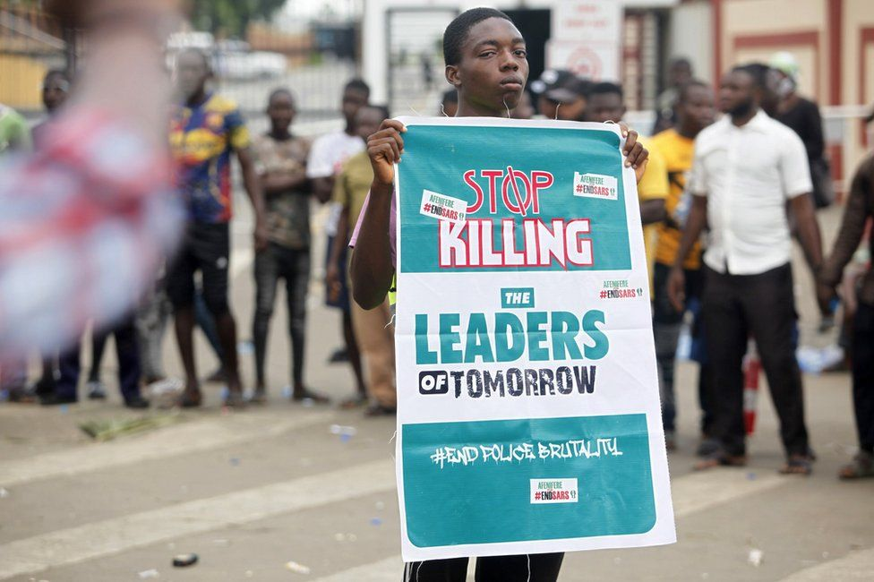

What is SARS
SARS is a unit in the Nigeria Police force. according to their name, Special Anti-Robbery Squad, they are commisoned to investigate, and cramp down on armed robbers.
SARS is a unit in the Nigeria Police force. according to their name, Special Anti-Robbery Squad, they are commisoned to investigate, and cramp down on armed robbers.
They SARS unit of the Nigerian Police Force started on a good note with great objective and motive, but just as every other sector in the Nigerian government, corruption and nepotism took better part of the officers deployed as SARS operatives. They soon started abusing their powers and began arresting and extorting innocent citizens. it got so bad that if you failed to dance to their tune and give them the exact amount of money they demand from you, they will tag you a criminal and kill you.
The call to end SARS started over four years ago and on 4 different occasion the IG of police {name } had called for the disnadment of the unit but shortly after the call, SARS operative are seen back on the road, terrosing and distorying lives and proprties. But after they killed a set of twin brother because the duo refused to give them money bribe....